In China Employee Termination in 2026: Payroll Control-Tower Scoreboard for Foreign Employers
Key takeaways
- In China employee termination, the decisive risk is usually workflow quality, not arithmetic: legal basis, payroll mapping, and communication must stay aligned.
- A D-3 control-tower scoreboard gives foreign employers a practical go/no-go decision for in-cycle versus off-cycle final payments.
- Most costly errors happen when unresolved exceptions are forced into payroll lock rather than routed through controlled exception playbooks.
- Role ownership across HR, Payroll, Manager, and Vendor/EOR is essential for speed with defensibility.
- Local interpretation can differ by city and case facts; uncertain items should be flagged and confirmed before release.
The immediate decision foreign employers face each termination month
For multinational employers, termination cases in China are not rare events—they are recurring operational pressure points. The hard choice often appears 48–72 hours before payroll lock: should this case be paid in-cycle now, or moved to an approved off-cycle path because approvals, evidence, or treatment logic are not complete? Teams that avoid this explicit decision usually end up making it implicitly under time pressure, which is where risk multiplies.
A practical termination model therefore starts with a control question, not a legal memo: is the case operationally release-ready? If yes, payroll can proceed with confidence. If no, delaying contested components through a controlled route is usually safer than rushing a non-defensible payout. This approach protects compliance, reduces rework, and keeps employee communication coherent.
Termination control-tower scoreboard (D-3 go/no-go)
Use a five-dimension readiness scoreboard before payroll lock:
- Legal basis quality — clear basis code, evidence packet complete, compliance owner sign-off.
- Pay-package lock — all components mapped, assumptions documented, approvals complete.
- Communication consistency — employee-facing language matches payroll coding and case status.
- Technical readiness — payroll fields, tax notes, and contribution/offboarding tags validated.
- Archive readiness — case files indexed for post-run defensibility.
If any critical dimension is red, move contested elements to exception route. The goal is not to slow decisions; it is to prevent unforced errors at payroll lock.
Regulatory baseline (concise): confirmed framework vs operational uncertainty
The Labor Contract Law provides the core framework for termination handling, severance exposure, and compensation risk. The Social Insurance Law anchors obligations relevant to termination-month payroll and offboarding closure. Tax handling for final-pay components should be documented with current technical references and local implementation checks where needed.
What is consistent across sources is that termination handling requires process discipline and evidence quality. What remains uncertain in practice is often city-level interpretation of edge facts and evidentiary sufficiency thresholds in disputes. Foreign employers should manage this by marking uncertain points early, assigning owners, and obtaining local confirmation before payroll cut-off.
Failure map: where termination cases usually break
- D-10: case opened without complete legal-basis documents.
- D-7: severance/final-pay worksheet drafted with unresolved assumptions.
- D-5: manager approval delayed; finance funding not confirmed.
- D-3: communication draft and payroll coding diverge.
- D-0: payroll run includes contested components without complete approvals.
- D+3: employee dispute arrives; archive gaps slow response.
- D+7: offboarding closure incomplete, leaving lingering compliance risk.
This sequence is predictable and preventable with hard gates and explicit exception routing.
Scenario 1: late severance approval after payroll lock window
A foreign-owned business finalizes termination negotiations late in the cycle. HR has a draft package, but business approver signs after payroll input freeze. Payroll receives urgent requests to add severance manually. The employee is told payment is “in this month,” yet technical and approval controls are incomplete.
Operational lesson: apply scoreboard governance. If pay-package lock is red at D-3, release only uncontested components with approved communication and move severance to formal off-cycle path.
Scenario 2: disputed termination basis with incomplete evidence
A manager pushes for quick separation, but the evidence file is thin and inconsistent. HR and payroll still receive instructions to process final settlement. The payout may be mathematically correct, but defensibility is weak if challenged.
Operational lesson: do not treat unresolved basis risk as a payroll formatting issue. Keep case in controlled exception state until legal-basis quality is green.
Role-by-role SOP (D-10 to D+7)
Stage A — Intake and risk classification (D-10 to D-7)
HR owner
- Open case ID and record termination type, city, timeline, and contract facts.
- Run legal-basis completeness checklist.
- Assign risk tier (Standard / Controlled Exception / High-Risk).
Manager owner
- Submit business rationale and handover requirements.
- Confirm final decision owner and deadline.
Payroll owner
- Freeze non-essential variable inputs for the case.
- Pre-map final-pay components and unresolved assumptions.
Vendor/EOR owner
- Confirm local process constraints and required filing sequence.
- Escalate local uncertainty items with owner and ETA.
Stage B — Calculation and approval governance (D-7 to D-3)
HR + Payroll
- Build versioned final-pay worksheet.
- Attach assumption notes and source references.
- Route for dual approvals (HR compliance + payroll lead).
Finance/Control
- Validate funding and ledger mapping.
- Confirm in-cycle or off-cycle decision path.
SLA targets
- D-7: first calculation complete
- D-5: approvals in progress with no critical gaps
- D-3: scoreboard go/no-go finalized
Stage C — Payroll day execution (D-0)
Payroll owner
- Execute approved package version only.
- Reconcile gross-to-net and component-level variances.
- Archive payroll register and calculation artifacts.
HR owner
- Deliver aligned settlement communication.
- Log employee acknowledgment/query trail.
Stage D — Post-run closure (D+1 to D+7)
HR + Payroll + Vendor/EOR
- Verify offboarding and statutory processing steps.
- Complete archive indexing and closure checklist.
- Run mini-postmortem for exceptions and controls.
Required document checklist
| Document | Owner | Deadline | Why it matters |
|---|---|---|---|
| Termination case intake form + basis code | HR | D-7 | Sets compliant workflow path |
| Contract + amendments | HR | D-7 | Supports tenure and component mapping |
| Evidence packet (basis support docs) | Manager + HR | D-5 | Defensibility foundation |
| Versioned final-pay worksheet | Payroll | D-5 | Calculation transparency |
| Approval records (HR/Payroll/Business) | Approvers | D-3 | Release gate |
| Employee communication package | HR | D-3 | Messaging consistency |
| Payroll run snapshot + proof | Payroll | D+1 | Execution evidence |
| Offboarding completion records | HR Ops/Vendor | D+7 | Full closure control |
Exception handling playbook
Exception A: missing evidence at D-3
- Rule: no contested in-cycle release.
- Action: process only uncontested items if approved and compliant.
- Control: escalate same day to HR compliance lead.
Exception B: disputed basis from employee
- Rule: freeze contested updates pending review.
- Action: centralize response via case owner and preserve all logs.
- Control: single communication channel to avoid contradictions.
Exception C: late severance approval
- Rule: no manual override into locked run.
- Action: approved off-cycle payout with documented timeline.
- Control: finance + payroll + HR dual sign-off.
Exception D: local interpretation ambiguity
- Rule: uncertain treatment cannot be silently assumed.
- Action: obtain local confirmation before release.
- Control: explicit risk tag in case tracker.
System implementation notes
- Case-status fields: open, reviewed, approved, executed, closed.
- Reason-code controls: standardized termination basis dictionary.
- Approval workflow: in-system approvals with timestamps.
- Worksheet versioning: immutable IDs for calculation files.
- Audit archive: evidence, approvals, communications, run outputs, closure docs.
- Scoreboard dashboard: D-3 readiness by team/entity.
- Exception KPIs: late approvals, off-cycle frequency, dispute incidence.
Common mistakes and prevention
- Mistake: treating termination as manager-only decision.
Prevention: mandatory HR/payroll control gates before release.
- Mistake: pushing unresolved components into in-cycle run.
Prevention: scoreboard-based go/no-go rule at D-3.
- Mistake: communication not aligned with payroll coding.
Prevention: single source-of-truth case summary.
- Mistake: archive completed after dispute starts.
Prevention: D+1 evidence upload requirement.
- Mistake: repeating exceptions without root-cause fixes.
Prevention: post-run control review and owner action log.
What to do now: 10-step action plan
- Deploy D-3 termination scoreboard template.
- Enforce release gating by readiness dimensions.
- Standardize final-pay worksheet with assumption log.
- Assign named owners for HR, Payroll, Manager, Vendor/EOR.
- Define off-cycle governance rules in writing.
- Build communication templates tied to case status.
- Launch exception tracker with SLA targets.
- Require D+1 archive completeness check.
- Review monthly termination KPIs with leadership.
- Update local confirmation paths quarterly.
What to watch next
Termination risk in China for foreign employers will continue to depend heavily on execution discipline and evidence quality. City-level practice for close cases may vary, especially around evidentiary sufficiency and technical handling details. Teams that keep uncertainty visible and controlled before payroll lock are typically more resilient than teams relying on after-the-fact corrections.
FAQ
1) What is the most important termination payroll control?
The D-3 go/no-go scoreboard tied to in-cycle release decisions.
2) Should we always pay everything in-cycle to avoid employee friction?
Not if case readiness is incomplete. Controlled off-cycle for contested components is often safer and clearer.
3) Who should own final release decisions?
Shared ownership: HR compliance, payroll lead, and business approver with documented authority.
4) Can one China-wide termination SOP work everywhere?
Framework yes, but local confirmation may still be required for specific details.
5) What records matter most in disputes?
Legal-basis evidence, approved worksheet versions, communication logs, and payroll execution proof.
6) How should EOR users apply this model?
Define client vs EOR ownership explicitly for basis confirmation, payout approval, and filing closure.
7) Does this guidance replace legal advice?
No. It is operational guidance and should be paired with qualified local legal/tax advice for specific cases.
Disclaimer
This content is informational only and does not constitute legal, tax, or accounting advice. China employment implementation can vary by city and facts. Employers should seek qualified local professional advice before making decisions.
Sources
- National People's Congress. Labor Contract Law of the People's Republic of China. Official English text: http://www.npc.gov.cn/zgrdw/englishnpc/Law/2007-12/13/content_1384064.htm (accessed 2026-02-26).
- National People's Congress. Social Insurance Law of the People's Republic of China. Official English text: http://www.npc.gov.cn/zgrdw/englishnpc/Law/2009-02/20/content_1471106.htm (accessed 2026-02-26).
- PwC Worldwide Tax Summaries. People's Republic of China – Individual taxes on personal income. https://taxsummaries.pwc.com/peoples-republic-of-china/individual/taxes-on-personal-income (accessed 2026-02-26).
- Littler. Key Recent Developments in China's Employment Law: A China-U.S. Comparative Perspective for Multinational Employers. 2025-09-16. https://www.littler.com/news-analysis/asap/key-recent-developments-chinas-employment-law-china-us-comparative-perspective.
China-Payroll.com can support foreign employers with compliance-first EOR and payroll execution design for termination workflows.
Need local employment support in China?
If you need a compliance-first partner for hiring, payroll, and risk controls in China, China-Payroll.com can help evaluate the right setup.
Image Prompt Pack
Create a 16:9 hero image for article title: 'In China Employee Termination in 2026: Payroll Control-Tower Scoreboard for Foreign Employers'. Scene: global operations team evaluating workforce model options for China market entry. Include motifs: decision matri…